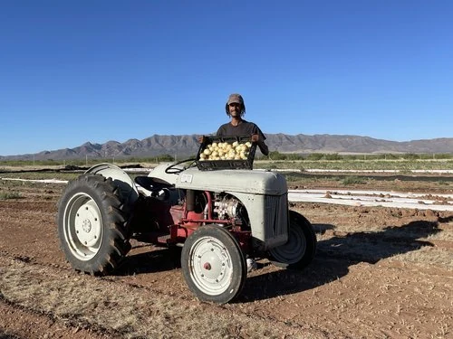

John
Café local
A McNeal farm helping strengthen local food access and opportunities for small producers throughout Cochise County.
Abarrotes y despensa
John Benedict moved to McNeal in 2018 and founded Desert Sky Produce in late 2020. Seeing the need for stronger local food access and better outlets for small farmers, ranchers and producers, he went on to co-found The Local Co-op.
Conozca el origen de sus alimentos